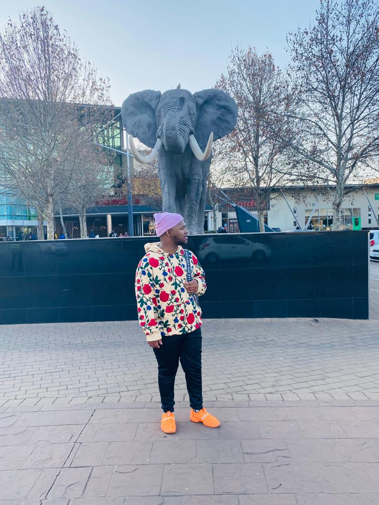

Tshepo Mohlophehi
Embracing Life's Rhythms: A Glimpse into the World of Tshepo Mohlophehi
Greetings! I'm Tshepo Mohlophehi, a spirited individual hailing from the vibrant town of Orange Farm. Beyond the lines of code and the intricate dance of software development, my life unfolds with a symphony of diverse interests and passions.
Roots in Orange Farm:
Orange Farm, with its rich culture and close-knit community, is not just a hometown for me – it's the canvas upon which my journey began. Its warmth and authenticity have shaped my values and infused me with a deep sense of connection.
Coding Maestro:
In the world of algorithms and codes, I find my sanctuary. As a software developer, I am drawn to the art of crafting solutions and solving puzzles. The digital realm is my playground, where every line of code tells a story, and every bug presents an opportunity for growth.
Harmony in Music:
Beyond the glow of the computer screen, my soul finds solace in the rhythmic tapestry of music. Whether it's the soulful melodies that embrace me during moments of introspection or the upbeat tunes that fuel my creativity, music is an integral part of my life. It's not just a soundtrack; it's an emotion.
Laughter, the Best Medicine:
Dave Chappelle and Trevor Noah are not just comedians; they are architects of joy in my world. Their wit, humor, and unapologetic storytelling resonate with me. Laughter, after all, is a universal language, and these comedians are my preferred translators.
Biking Adventures:
Amidst the bytes and bits, I find liberation on two wheels. Bike riding isn't just a physical activity; it's a journey where the wind whispers tales of freedom. The open road becomes a canvas, and with every pedal, I paint the chapters of my own adventure. In the intricate mosaic of my life, coding, music, comedy, and biking seamlessly weave together, creating a vibrant tapestry that reflects the essence of Tshepo Mohlophehi. Join me on this journey, where every line of code and every note of music contributes to the masterpiece of my existence.